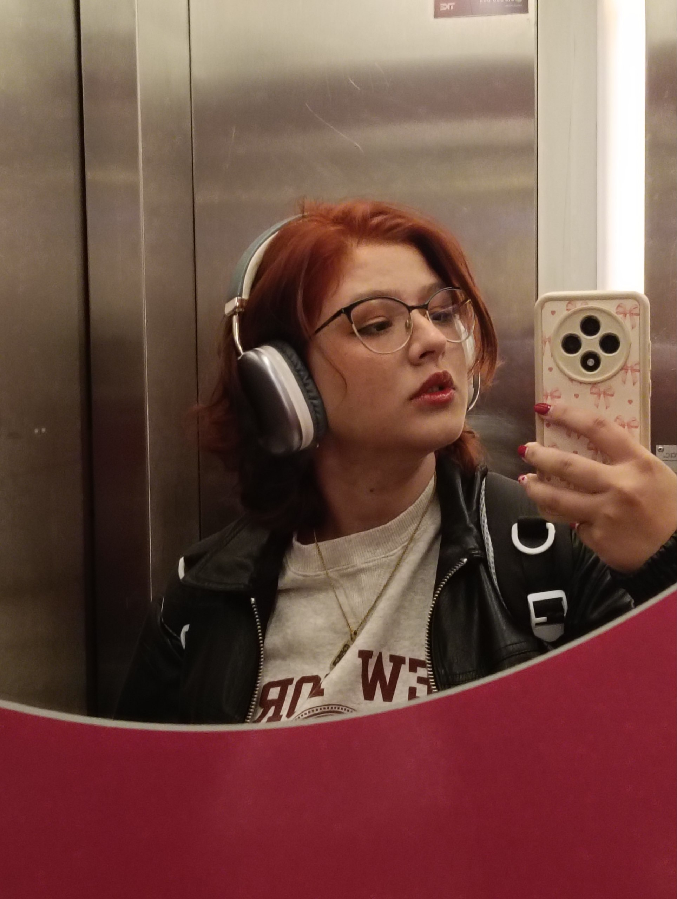

Olá, eu sou a Sofia!
Sou uma designer a começar neste mundo à procura de novos desafios e ganhar experiência na área criativa. Sou apaixonada por livros, música e viagens ao ponto de que guiam maior parte da minha vida profissional e pessoal. Quando não estou a desenhar ou a fotografar, adoro escrever histórias, viajar para descobrir novos lugares, e criar memórias sempre com ou um caderno, uma câmera ou o telemóvel na mão.

Últimos Projetos
As últimas histórias que contei através do design e da criação de histórias envolventes e cheias de simbolismo.